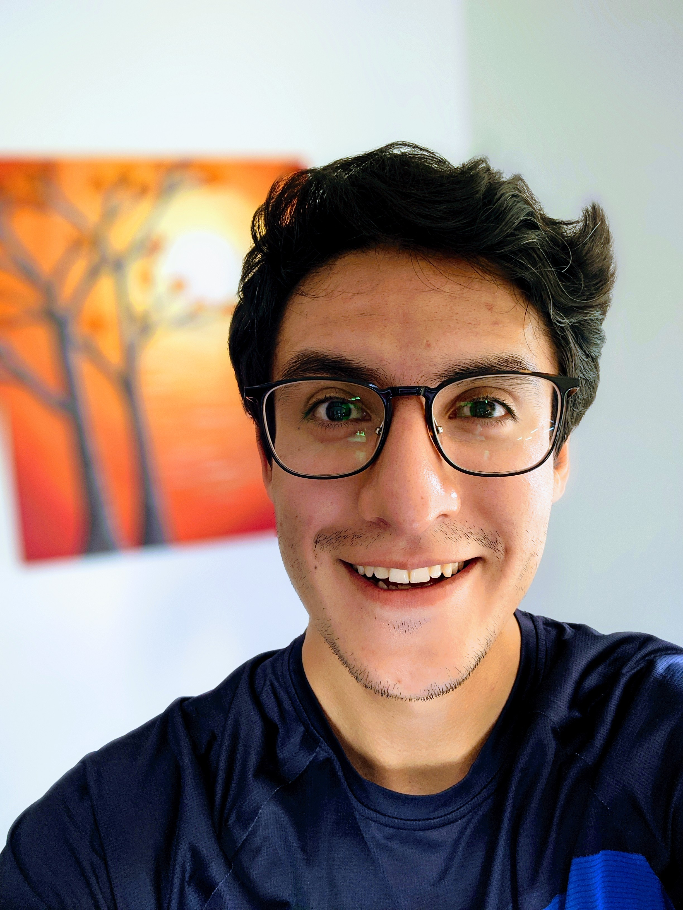

&nbsp;
<hr />
<style>
.clipped {
    clip-path: circle();
}
</style>


<!-- save your image in the directory as picture.jpg -->
<p><center></center></p>


<!-- change to your name -->
<p style="text-align: center;">By Dax Kellie</p>
<p style="text-align: center;"><span style="color: #808080;">Atlas of Living Australia</span></p>


<link rel="stylesheet" href="https://cdnjs.cloudflare.com/ajax/libs/font-awesome/5.15.3/css/all.min.css">

<!-- Change href to personal directories -->
<!-- other options are: linkedIn, personal website -->
<p style="text-align: center;">
    <a href="https://twitter.com/daxkellie?lang=en" class="fab fa-twitter"></a>
    <a href="https://github.com/daxkellie/" class="fab fa-github"></a>
</p>

&nbsp;


